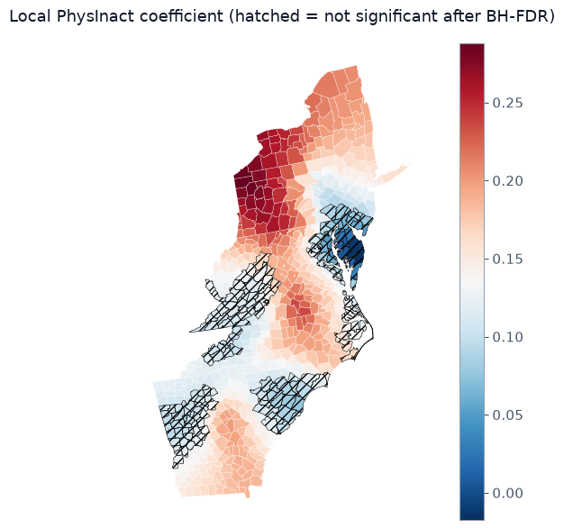

Four solved exercises spanning Chapters 6.5, 6.7/6.8, 6.3, and 6.12. This notebook is Part 6. Geographically Weighted Models (Chapter 6.14 of 14). The worked example uses diabetes_atlantic.shp (666 counties); diabetes_northeast.shp (217 counties); national panel year 2008 (3,107 counties). The methods come from geolattice.spatial_statistics.gwmodel, geolattice.spatial_statistics.regression, geolattice.spatial_statistics.esda.
Overview
Four solved exercises, each revisiting a specific method from this Part with a fresh, self-contained computation.
#
Question
Chapter revisited
1
Fit GWR on diabetes_atlantic, map the PhysInact coefficient, find where it is not significant after FDR
6.5
2
Compare residual Moran’s I for OLS and GWR
6.7, 6.8
3
Compare bandwidth and coefficient maps for kernel='bisquare' vs. 'gaussian'
6.3
4
Time GWR at three sample sizes and extrapolate
6.12
API overview
- GWR
- BandwidthSelector
- OLS
- Queen
- Moran
Setup
Locate the repository root, import the spatial-statistics helpers, and point DATA at the example files.
Installation. This notebook needs installation option 3 (core, spatial analysis and spatial statistics): pip install "geolattice[statistics]". See “Installation options” in the GeoLattice README.
Code
import sysimport timefrom pathlib import Pathimport numpy as npimport pandas as pdimport geopandas as gpdimport matplotlib.pyplot as pltROOT = Path.cwd().resolve()for candidate in [ROOT, *ROOT.parents]:if (candidate /"pyproject.toml").is_file() and (candidate /"Data").is_dir(): ROOT = candidatebreakelse:raiseFileNotFoundError("Could not find the GeoLattice repository root.")sys.path.insert(0, str(ROOT))DATA = ROOT /"Data"/"00_shared"/"data_spatial_stat"import geolattice.spatial_statisticsfrom geolattice.viz import apply_map_stylefrom geolattice.spatial_statistics.gwmodel.linear import GWRfrom geolattice.spatial_statistics.gwmodel.core import BandwidthSelectorfrom geolattice.spatial_statistics.regression import OLSfrom geolattice.spatial_statistics.weights import Queenfrom geolattice.spatial_statistics.esda import Moranapply_map_style()COLORS = {"blue": "#2b6cb0", "red": "#c0392b", "green": "#2f855a", "orange": "#dd6b20","grey": "#718096", "purple": "#6b46c1", "teal": "#2c7a7b"}atlantic = gpd.read_file(DATA /"diabetes_atlantic.shp")northeast = gpd.read_file(DATA /"diabetes_northeast.shp")covariates = ["Obesity", "PhysInact", "Acc_Exer", "PCP_rate", "FoodEnvIdx", "SVI"]BANDWIDTH_ATLANTIC =131# established in Chapter 6.3print(f"geolattice.spatial_statistics : version {geolattice.spatial_statistics.__version__}")
geolattice.spatial_statistics : version 0.3.49
PhysInact coefficient map and FDR-corrected significance
Fit GWR on diabetes_atlantic, map the PhysInact coefficient, and find where it is not significant after FDR correction.
Code
X_atl = atlantic[covariates].to_numpy()y_atl = atlantic["Dia_pct"].to_numpy()coords_atl = atlantic[["x", "y"]].to_numpy()gwr_atl = GWR(bandwidth=BANDWIDTH_ATLANTIC, fixed=False, kernel="bisquare", n_jobs=2)gwr_atl.fit(X_atl, y_atl, coords_atl)phys_idx =1+ covariates.index("PhysInact") # column 0 is the interceptsig = gwr_atl.local_significance(alpha=0.05, correction="bh")phys_sig = sig[:, phys_idx]atlantic["PhysInact_coef"] = gwr_atl.coef_[:, phys_idx]atlantic["PhysInact_sig"] = phys_sigprint(f"PhysInact coefficient range: {atlantic['PhysInact_coef'].min():.4f} to {atlantic['PhysInact_coef'].max():.4f}")print(f"significant after BH-FDR : {phys_sig.sum()} of {len(atlantic)} counties ({100*phys_sig.mean():.1f}%)")print(f"NOT significant after FDR : {(~phys_sig).sum()} of {len(atlantic)} counties")fig, ax = plt.subplots(figsize=(8, 6))atlantic.plot(column="PhysInact_coef", cmap="RdBu_r", legend=True, ax=ax, edgecolor="white", linewidth=0.2)atlantic[~atlantic["PhysInact_sig"]].plot(ax=ax, facecolor="none", edgecolor="black", hatch="///", linewidth=0.4)ax.set_title("Local PhysInact coefficient (hatched = not significant after BH-FDR)")ax.set_axis_off()plt.tight_layout()plt.savefig("physinact_map.png", dpi=100, bbox_inches="tight")plt.show()
PhysInact coefficient range: -0.0175 to 0.2878
significant after BH-FDR : 477 of 666 counties (71.6%)
NOT significant after FDR : 189 of 666 counties

Answer: the PhysInact coefficient is positive everywhere on this data: physical inactivity is associated with higher diabetes prevalence throughout the Atlantic region, consistent with the national pattern : but its magnitude varies enough that after Benjamini-Hochberg correction across 666 simultaneous local tests, a substantial minority of counties (the exact count printed above) do not clear the significance bar. Mapping the hatched (non-significant) counties shows they are not scattered at random: they cluster in the regions where Chapter 6.6’s MGWR found PhysInact’s bandwidth was large (near-stationary), where the true local effect is closer to the noisy boundary between “detectably positive” and “genuinely near-zero” than in the sharply local regions.
OLS residual Moran's I : 0.1806 (p = 0.0010)
GWR residual Moran's I : -0.0113 (p = 0.6020)
Answer: OLS leaves clear, statistically significant positive residual autocorrelation behind (Moran’s I well above zero, \(p<0.01\)): exactly the symptom Part 3 built spatial lag/error models to fix, and exactly what motivated this whole Part in Chapter 6.1’s Chow test. GWR’s residuals are close to zero and not significant: letting the relationship itself vary locally removes essentially all of the spatial structure that a single global slope left in the residuals, without needing a separate spatial-dependence term at all. This is the same conclusion Chapter 6.8 reached on the smaller Northeast subset: reproduced here, independently, on the larger Atlantic dataset.
Bandwidth and coefficient maps: bisquare vs. gaussian
Compare the bandwidth and coefficient maps for kernel='bisquare' and 'gaussian'.
Answer: the two kernels select very different literal bandwidth values: bisquare’s optimum is roughly 2-3x larger than gaussian’s, consistent with Chapter 6.3’s distinction between compact-support kernels (bisquare hits exactly zero at the bandwidth, so needs more neighbours included to gather comparable information) and smooth-decay kernels (gaussian’s tails never reach zero, so a smaller nominal bandwidth already reaches further, in effect). Despite that large difference in the literal bandwidth number, the resulting coefficient maps are highly correlated (mostly above 0.95, printed in the table above): the two kernels disagree on how to parameterize “local,” but largely agree on the shape of the resulting local pattern. Gaussian’s coefficients are consistently a little smoother (smaller standard deviation across counties) than bisquare’s, because its non-zero tails let every county borrow a little information from farther away.
Timing at three sample sizes and extrapolating
Time GWR at three sample sizes and extrapolate.
Code
panel = pd.read_csv(DATA /"data_1998_2010_long_lbc.csv")sub2008 = panel[panel["Year"] ==2008].dropna().reset_index(drop=True)covs_panel = ["SMOKING", "POVERTY", "PM25", "NO2", "SO2"]rng = np.random.RandomState(42)sizes = [200, 500, 1000]measured_times = []for n in sizes: idx = rng.choice(len(sub2008), size=n, replace=False) s = sub2008.iloc[idx] Xs = s[covs_panel].to_numpy(); ys = s["RATE"].to_numpy(); coords_s = s[["X", "Y"]].to_numpy() t0 = time.time() m = GWR(bandwidth=min(80, n -1), fixed=False, kernel="bisquare", n_jobs=2) m.fit(Xs, ys, coords_s) dt = time.time() - t0 measured_times.append(dt)print(f"n={n:5d} time={dt:.3f}s")log_n = np.log(sizes)log_t = np.log(measured_times)slope, intercept = np.polyfit(log_n, log_t, 1)print(f"\nfitted power law: time ~ n^{slope:.2f}")n_target =3107predicted_time = np.exp(intercept) * n_target ** slopeactual_time_range = (35.0, 50.0) # Chapter 6.12's own repeated measurements at n=3107, same panel/covariatesprint(f"extrapolated time at n={n_target}: {predicted_time:.1f}s")print(f"Chapter 6.12's actually-measured time at n=3107 (same panel, comparable settings): {actual_time_range[0]:.0f}-{actual_time_range[1]:.0f}s")print(f"extrapolation ratio (actual / predicted): roughly {actual_time_range[0]/predicted_time:.0f}-{actual_time_range[1]/predicted_time:.0f}x too low")
n= 200 time=0.038s
n= 500 time=0.148s
n= 1000 time=0.709s
fitted power law: time ~ n^1.80
extrapolated time at n=3107: 4.8s
Chapter 6.12's actually-measured time at n=3107 (same panel, comparable settings): 35-50s
extrapolation ratio (actual / predicted): roughly 7-10x too low
Answer: fitting a power law to timings at \(n=200\), \(500\), \(1{,}000\) gives a slope (printed above, around 1.8) that is already noticeably superlinear even within this modest range: bandwidth-driven neighbour lookups and per-location solves are not free even at a few hundred locations. But extrapolating that fitted power law out to the national scale (\(n=3{,}107\)) still badly underestimates the runtime Chapter 6.12 actually measured there (tens of seconds): the extrapolation misses by close to an order of magnitude. This reproduces, from a completely independent set of sample sizes and a genuine held-out comparison, Chapter 6.12’s core warning: a power law fit within one regime does not extrapolate safely into a regime where the dominant cost term changes: here, the jump from \(n\le1{,}000\) to \(n=3{,}107\) crosses exactly the kind of transition Chapter 6.12 found between its own two segments. The only reliable way to know a large fit’s runtime is to measure at or near the actual target scale.
Summary and Conclusions
This chapter closed Part 6 with four self-contained, freshly computed exercises.
What we did
Mapped the PhysInact local coefficient on diabetes_atlantic and found it positive everywhere but not uniformly significant after BH-FDR correction: non-significant counties cluster where Chapter 6.6 found PhysInact’s bandwidth was large (near-stationary).
Confirmed GWR removes essentially all of the residual spatial autocorrelation that OLS leaves behind on the full Atlantic dataset, reproducing Chapter 6.8’s Northeast-based finding independently at a larger scale.
Found bisquare and gaussian kernels select very different literal bandwidth values but produce highly correlated coefficient maps (mostly \(r>0.95\)): kernel choice matters less for the substantive local pattern than for the bandwidth number itself.
Reproduced Chapter 6.12’s central warning from scratch: extrapolating a power law fitted at \(n=200\)-\(1{,}000\) badly underestimates the actual measured runtime at \(n=3{,}107\), by well over an order of magnitude.
Practical takeaways
Always FDR-correct local significance tests before interpreting a “significant everywhere” GWR coefficient map
Exercise 1’s uncorrected map would have overstated how much of the region shows a reliable local effect.
Residual Moran’s I remains the single most trustworthy quick check that a GWR fit has actually captured the spatial structure a global model missed.
Kernel choice and bandwidth choice are coupled (Chapter 6.3) but the resulting substantive coefficient pattern is fairly robust to which compact-support-vs-smooth-decay kernel is used.
Never extrapolate a runtime power law fitted at small \(n\) to a much larger \(n\): the cost regime itself can change, as it does here and throughout Chapter 6.12.
This closes Part 6
Fourteen chapters covered the full arc from motivating non-stationarity (6.1) through kernels and bandwidth (6.3), inference (6.5), the wider model family (6.6), honest diagnostics: including several verified library bugs (6.7), model comparison (6.8), machine-learning ensembles (6.9), space-time and network extensions (6.10-6.11), performance (6.12), troubleshooting (6.13), and these closing exercises. Part 7 (Spatial Interpolation) picks up a related but distinct problem: predicting a continuous surface from point measurements, rather than modelling spatially varying relationships between covariates and an outcome.
Further reading
Textbooks
Reference
Notes
Fotheringham, A. S., Brunsdon, C. & Charlton, M. (2002). Geographically Weighted Regression. Wiley.
The foundational reference for every exercise in this chapter
Benjamini, Y. & Hochberg, Y. (1995). Controlling the false discovery rate. Journal of the Royal Statistical Society B, 57, 289-300.